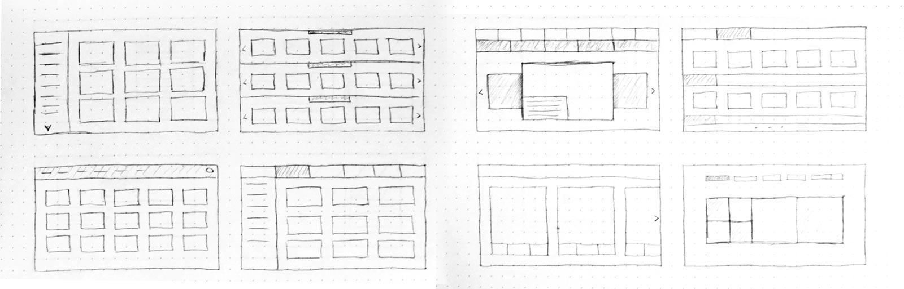
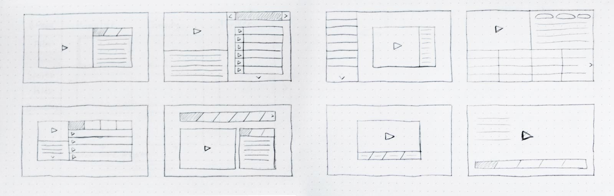
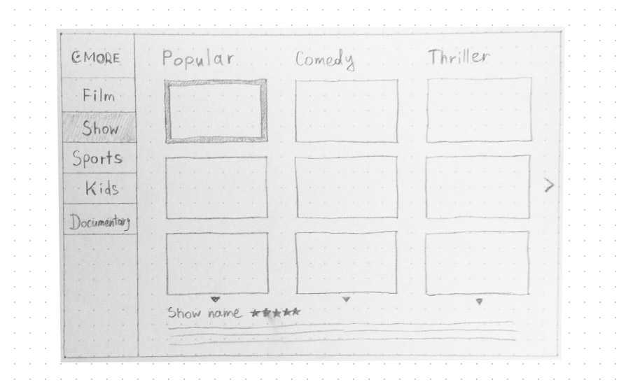
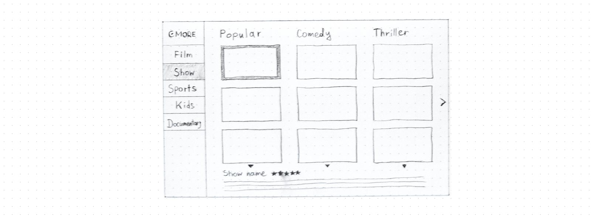

Sketching
I determined the main elements of the app and tried to play with different layouts on the first step. The navigation includes 5 categories: Film, Show, Sports, Kids, and Documentary.
   Prototyping
After I decided which way to go, I made two prototypes.


Finalizing
On the final stage I used the prototypes I've made before to make a clear user interface. There is an icon for each category. The font was chosen to maximize the readability and not get too far from the existing style. The colours are mostly dark, because we usually watch the TV in the evening and when the picture is too light it can strain your eyes.